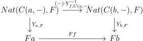

Date: 7/31/2017.
Often when studying categories, one likes to compare functors to other functors via natural transformations, to learn about everything involved. Essentially all of the important notions in category theory: limits, representations, adjoints, ends, and Kan extensions are ways of manifesting this idea. Today we will talk about representable functors, which are especially nice functors to Set. The Yoneda Lemma gives us a way to understand how representable functors relate to other functors, and gives a way to learn about a category by embedding it in a “category of presheaves” (this can be seen as analogous to studying groups via actions or studying rings via modules).
Definition 1.1. A representable functor \(F:C \to Set\) is a functor that is naturally isomorphic to a Hom functor \(C(a,-)\) for some object \(a\). We say that \(a\) is the representing object of \(F\).
Recall that naturally isomorphic functors should be thought of as essentially the same. Here are some examples of representable functors. The contravariant power set functor that takes a set to its set of subsets and a function to the function on power sets which is taking the preimage of a power set. This is represented by the object \(2\), the set of \(2\) elements.
Consider the functor taking a topology to its set of open sets. This is a contravariant functor, because of how continuity is defined, and is represented by the Sierpinski space \(S\). The Sierpinski space is a topology with two points, \(a\) and \(b\), and one non trivial open set, namely the set containing \(a\). Every open set in a space \(X\) is determined by the preimage of \(a\) for a unique map from \(X\) to \(S\), so the Sierpinski space is the representing object.
Another example comes again from algebraic topology. Recall I defined the fundamental group \(\pi _1\), a functor from \(\Top ^* \to \Set \). In fact, we can consider a slightly different category, \(\hTop ^*\), for which \(\pi _1\) (and analogously \(\pi _n\)) will be corepresentable. Namely, consider \(\Top ^*\), and identify two continuous maps if they are homotopic (can be deformed to each other). This is well defined with respect to composition, so we can form a new category with these maps identified, \(\hTop ^*\). Now by definition, \(\pi _1\), viewed as being from this category, is represented by \(S^1\). You might object, and say “but isn’t \(\pi _1\) to the category of groups, whereas a representable functor must be to the category of sets!” This is a reasonable concern, but we can say that this representable functor factors through the category of groups i.e the diagram below commutes where \(F\) is the forgetful functor:
It turns out this is because \(S^1\) is something called a cogroup object, which will not be defined now. For now we will colloquially call functors representable if we are in a similar situation to the one just described (ie. the functor may not land in \(\Set \), but rather in some concrete category).
There is another functor people care about in algebraic topology, cohomology (denoted \(H^n\). The Brown Representability Theorem is a theorem that gives a necessary and sufficient condition for representability of a functor from \(\Hotc ^*\), the homotopy category, which can be thought of as the subcategory of \(\hTop ^*\) consisting of nice enough spaces (CW Complexes). In particular, Brown Representability says that cohomology is corepresentable.
We can use the fact that cohomology and homotopy are (co)representable to compute \(\pi _m(K(\ZZ ;n))\), where \(K(\ZZ ;n)\) is the corepresenting objects of \(H^n\). In particular, \(\pi _m(K(\ZZ ;n)) \cong \Hotc ^*(S^m,K(\ZZ ;n)) \cong H^n(S^m)\), and \(H^n(S^m)\) is \(\ZZ \) if \(n = m,0\) and \(0\) elsewhere.
Another example of a representable functor is the unit functor \((-)^*:\Ring \to \Grp \), that takes a ring to its group of units. The representing object is the ring \(\ZZ [x,x^{-1}]\). \(GL_n\) is a functor from \(\Ring \) to \(\Grp \) as well, and is also representable, by the object \(\ZZ [x_{ij}:1 \leq i,j \leq n, \det ^{-1}]\) where \(\det ^{-1}\) is the determinant written as a polynomial in the \(x_{ij}\).
Recall the functor \((-)^*: \Vect _F^{op} \to \Vect _F\), the dual functor. This is also a corepresentable functor, represented by \(F\) viewed as a one dimensional vector space over itself.
Many forgetful functors are representable. For example the forgetful functor from \(\Grp \) to \(\Set \) is represented by \(\ZZ \). The forgetful functor from \(\Ring \) to \(\Set \) is represented by \(\ZZ [x]\).
Finally, recall the examples I described in the previous lecture of turning categories of spaces into equivalent categories of rings. These are all representable. The functor taking an affine variety to its ring of functions is represented by \(\AA ^1\). The functor taking a Boolean algebra to its Stone space (ie totally disconnected Hausdorff) is represented by the initial Boolean algebra, \(2\). The functor taking a compact Hausdorff space to its C*-algebra is represented by \(\CC \).
Note that I keep using the word “the” representing object. Is this representing object unique? It is, up to isomorphism, and this is an immediate consequence of the Yoneda Lemma. To begin thinking about the Yoneda Lemma, let us consider again our favorite representable functor, \(Set(-,2)\), the power set functor. In a previous lecture, I asked what are all the natural transformations from this to itself? It is not terribly hard to come up with a few.
For each set X, we need a natural map from its power set to itself in order to define a natural transformation. A few maps are as follows: the map taking every subset to the empty set. The identity. The map taking every subset to the entire set. The map taking every subset to the complement. One may check these are indeed natural transformations. But are they all? The Yoneda Lemma says yes. One may note that these natural transformations are in correspondence with the maps from \(2\) to itself. Indeed the complement corresponds to switching the two elements of \(2\), sending everything to the empty set or the entire set corresponds to sending both elements of \(2\) to either element, and the identity corresponds to the identity. The Yoneda Lemma generally gives a correspondence between natural transformations of representable functors and the image of the representing object. More precisely:
Proposition 2.1 (Yoneda Lemma). Let \(C\) be a (locally small) category, and \(F: C \to \Set \) a functor. There is a bijection \(y\) between the set of natural transformations from \(C(a,-) \to F\) (denoted \(\Nat (C(a,-),F)\)) and \(Fa\). The bijection is given by sending \(\eta \in \Nat (C(a,-),F)\) to \(\eta _a(1_a)\).
Proof. The fact that this correspondence is injective is immediate from the below commutative diagram, if we chase around the identity element:
To check surjectivity, just note that for each element \(x \in Fa\), sending \(x = \eta _a(1_a)\) and setting \(\eta _b(f) = Ff(x)\) does indeed define a natural transformation, as seen in the diagram below:
Dualizing the Yoneda Lemma yields the same statement for \(C(-,a)\). Another important part of the Yoneda Lemma is that the bijection is natural.
Proposition 2.2. The Yoneda bijection \(Y\) is natural in \(F\) and \(a\), ie the bijection given in Proposition 2.1 is natural when viewed as a transformation between functors in \(F\) and \(a\).
Proof. We consider the diagram for naturality in F:
and the corresponding one for naturality in a:

However, \((\gamma \cdot Y^{-1}_{f,C(a,-)})_b(1_b) = \gamma _a(Ff(1_b)) = Ff(\gamma _a(1_a))\) as \(\gamma \) is natural. □
In particular these allow us to answer our question about the power set functor. it is just the functor \(\Set (-,2)\), so Yoneda Lemma tells us that the natural transformations to itself are in bijection with \(2^2\), so indeed we had named them all.
Presheaf is a word that comes from the fact that they are a less structured (pre) version of an object people care more about, namely sheaves. The word sheaf is geometric in nature, namely a way of locally attaching information to a space in a way that preserves global structure and allows one to glue local information together. We won’t need to worry about this way of thinking about presheaves, and can think about this in a purely categorical way right now. The Yoneda Lemma allows us to embed \(C\) into \(\Set ^{C^{op}}\), the category of presheaves, as follows:
Corollary 2.4. There is a fully faithful functor \(y\) sending \(C\) to \(\Set ^{C^{op}}\) sending \(c \in C\) to \(C(-,c)\).
Proof. The fact that the bijection \(Y\) is a natural isomorphism amounts to the fact that \(y\) is fully faithful (recall the fact that a functor induces a natural transformation on Hom functors, which is an isomorphism iff the functor is fully faithful). Indeed we have \(C(a,b) \cong \Nat (C(-,a),C(-,b))\). □
For free we also get:
Corollary 2.5. Representing objects are unique up to isomorphism.
Proof. If two representable functors are naturally isomorphic, by Corollary 2.4, the representing objects are as well. □
Here are some amusing applications of the Yoneda lemma:
Let us consider what happens in the case that \(C\) is a group. We get that \(G\) embeds as an object inside the category of right G-actions (\(\Set ^{G^{op}}\)). In particular, G gets sent to the action of \(G\) on itself. The fact that this particular action is faithful is Cayley’s Theorem: every group is isomorphic to a subgroup of \(S_G\).
How about in the case of a poset \(P\)? Well, we should think of the set of arrows in a poset as not landing in \(\Set \), but rather in the category \(2\), which has two objects, 0 and 1, and one non identity arrow from \(0\) to \(1\) (we can think about it this way because every two objects have at most \(1\) arrow between them). The analog of the Yoneda Lemma for categories enriched over \(2\) (ie the \(\Hom \) sets are in the category \(2\)) gives an embedding from \(P\) into \(2^{P^{op}}\). Now note that a set is just a category with only identity arrows. If \(|P|\) is the set of objects of \(P\) (thought of now as a category),\(2^{P^{op}}\) can be embedded into \(2^{|P|}\), the poset of subsets of \(P^{op}\). (Exercise: Show that the functor category between posets is a poset).
So in this case the Yoneda lemma proves that every poset is contained inside a poset of subsets of a set. Indeed the construction given by the Yoneda lemma is as follows: If \(P\) is a poset, consider the \(2^{|P|}\), which is the poset of subsets of \(P\). Then \(P\) embeds inside of it by sending \(p \in P\) to the set of things in \(P\) less than or equal to it.
We can also think of a ring \(R\) as a one object category enriched over \(\Ab \) (This can also be done over \(\Ab \), the category of right R-modules). In other words, there is an object \(*\), and \(R(*,*)\) is the underlying abelian group of R, and composition is the bilinear multiplication. Then we can consider the analog of Yoneda Lemma for \(R\). In particular, \(\Ab ^{R^{op}}\) is the category of right \(R\)-modules. Then the Yoneda lemma says \(M \cong \Hom (R,M)\) for any right \(R\)-module \(M\) (the isomorphism is as abelian groups). The Yoneda embedding says that \(R \cong \End _R(R)\), where \(\End _R(R)\) is the endomorphism ring of the \(R\)-module \(R\).
Another example is row operations. Let \(\Matr _n\) be as before, the category with objects the natural numbers and arrows from \(n\) to \(m\) the \(n \times m\) matrices. Consider the functor \(\Matr _n(n,-)\) that sends \(m\) to the set of \(n\) by \(m\) matrices. A row operation is a natural transformation from this functor to itself, so the Yoneda lemma says that this is given by multiplication on the left by a \(n \times n\) matrix, namely the elementary matrix corresponding to the row operation.
Finally, recall that the determinant is a natural transformation from \(GL_n\) to \((-)^*\), and that both of these functors are representable. Then the Yoneda lemma says that the determinant is given by a ring homomorphism from \(\ZZ [x,x^{-1}] \to \ZZ [x_{ij}:1 \leq i,j \leq n, \det ^{-1}]\), namely the one that sends \(x \to \det \).